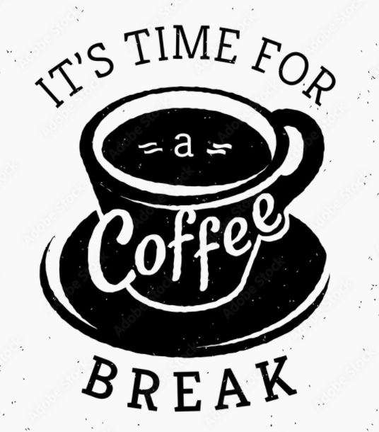

"Es probable que la ciencia nunca llegue
a inventar mejor sistema de
comunicacion en el trabajo que el
descanso para el café".
- Earl Wilson
"No hay nada como una taza de café
para estimular las células del cerebro
- Sherlock Holmes"
"No hay lunes malos, hay cafés poco
cargados."
-Anonimo"
"Lo mas interesante en la historia del
café es que donde quiera que ha sido
introducido ha engendrado revoluciones.
Es la bebida mas radical, cuya funcion
siempre ha sido la de incitar al pueblo a
pensar
-W.K Ukers"

Un coffe break no es mas que una pausa en mitad de una jornada laboral, conferencia, seminario o reunion similar en la que se aprovecha para descansar y tomar algo: un café, un té, un zumo y algo de comer El solo aroma del café ya nos induce en un clima de comunicación mas ameno y constructivo ¿Sabias que está probado científicamente que tomar café en el trabajo tiene grandes beneficios en nuestro rendimiento?
¿Para qué sirve?
Una pausa en medio de la jornada laboral es muy útil para despejar la mente, relajarse, estirarse y revitalizarse para continuar con el trabajo. No es sano ni productivo no tomar pausa, por el contrario un descanso (o varios) durante la jornada laboral, aunque parezca contradictorio, ayuda a mantenerse concentrado Estas pausas deben ser programadas y conscientes, no distracciones fortuitas
¿Cuánto dura un coffe break?
No debe prolongarse mas de quince o veinte minutos. No hay que olvidar que es una pausa para tomar algo pero no es el momento de entablar largas conversaciones o de abrir temas que no se van a poder hablar en esa corta pausa. Si puede ser buen momento para saludar a una persona, hacer alguna presentacion ocasional y cuestiones por el estilo. Esta pausa no solo se debe aprovechar para tomar algo. Tambien es el momento para ir al baño, hacer una llamada o cubrir cualquier otra necesidad que evite el que tenga que ausentarse de la reunion una vez que se vuelva a retomar.